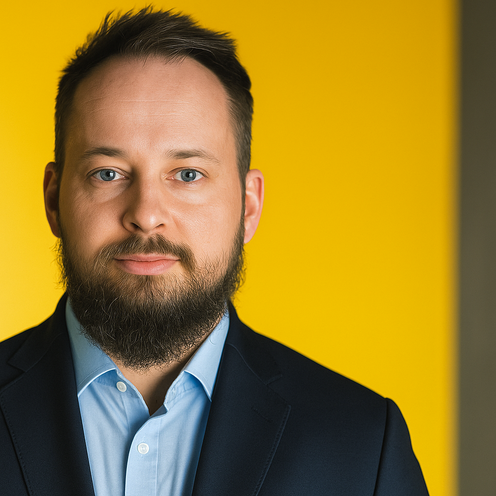

Patryk Markowski
Founder & Lead Transformation Consultant
Wspieram liderów w planowaniu i dowożeniu złożonych zmian: od diagnozy, przez roadmapę, aż po adopcję. Specjalizuję się w Legal Operations i transformacji cyfrowej w działach prawnych i compliance. I support leaders in planning and delivering complex changes: from diagnosis, through the roadmap, to adoption. I specialize in Legal Operations and digital transformation in legal and compliance departments.
Jako certyfikowany praktyk PROSCI®, wiem, że technologia to tylko 20% sukcesu. Reszta to ludzie. Projektuję procesy (CLM, ELM, Front Door), które są intuicyjne dla biznesu i bezpieczne dla prawników. As a certified PROSCI® practitioner, I know that technology is only 20% of success. The rest is people. I design processes (CLM, ELM, Front Door) that are intuitive for business and secure for lawyers.

Grzegorz Pukalski
Sales Manager OEM | Costing & Tendering
Praktyk sprzedaży B2B w przemyśle ciężkim. Na co dzień odpowiadam za współpracę z kluczowymi klientami OEM na rynkach międzynarodowych (24+ krajów). B2B sales practitioner in heavy industry. I manage key OEM client relationships in international markets (24+ countries).
Łączę perspektywę handlową z inżynierską. Specjalizuję się w optymalizacji procesów RFQ (Request for Quotation), precyzyjnych kalkulacjach kosztów produkcji oraz negocjacjach kontraktów długoterminowych. I combine commercial and engineering perspectives. I specialize in optimizing RFQ (Request for Quotation) processes, precise production cost calculations, and long-term contract negotiations.